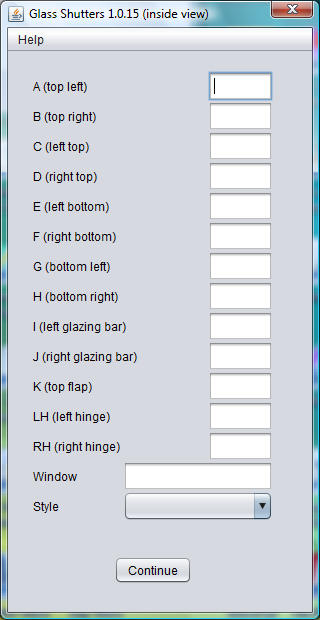

|
Glass Shutters secondary glazing for sash windows |
Glass
Shutters on |
|  The
measurements should be entered into the Glass Shutters
input screen as shown. All measurements
should be in millimetres and values for all
the boxes should be supplied. If a value
is not required due to the style of the
window, it should be entered as zero. The window should be given a unique name to identify it within the property. When you run the program, the script file will be stored in Documents\Glass
Shutters\scr\
and
an audit file will be stored inDocuments\Glass
Shutters\audit\
To run the script in DraftSight, use Tools/Run Script. This will generate the drawing and store it in DWG format in Documents\Glass
Shutters\dwg\
If you require the drawing in a different format, use File/Save As. You may wish to set the DraftSight default "Save As" type to you preferred format. The drawing will be a flipped image suitable for projecting onto the coated side of the glass. The maximum allowed out of plumb of the batten slips is 6mm and the depth of the notches for the hinges will be adjusted to accommodate this. Android Version In the Android version, the script file will be stored in storage/sdcard0/Glass
Shutters/mcr/
and an audit file will be stored in storage/sdcard0/Glass
Shutters/audit/
To run the script in DraftSight, use Tools/Run Script and select the Macro (*.mcr) type. This will generate the drawing and store it in DWG format in C:\Users\Public\Documents\Glass
Shutters\dwg\
Copyright © 2013, 2014, 2015 Donald G Gray |